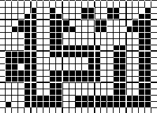

This toe up sock features a braided cuff edging and hem, a two-color pattern using Kufic Arabic script spelling out the word “Baraka” which is like the Hebrew word “Brucha” or "Barakha" meaning “blessing.” Arabic script is very pretty calligraphy and makes an almost abstract pattern.
Materials:
100 Grams Lorna’s Laces Sock Yarn in a variegated berries shade (this is a one-off shade but you can substitute any variegated shade you want.) –Main Color
A few grams Lorna’s Laces Raspberry solid yarn or any solid sock yarn
50 Grams Kroy 3 Ply in Pale Blue
Size 1 or 0 double point needles, set of 5.
Method:
Cast on 8 stitches using the figure-8 method over two needles. Consult “Simply Socks ” by Anna Zilboorg, Ethnic Socks and Stockings” by Gibson-Roberts. This is a somewhat challenging cast-on. If you find you cannot do it, you can cast on using Emily Ocker’s circular cast-on (Elizabeth Zimmerman Knitter's Almanac ) and increase in rounds until you have 75 stitches. For the toe-up figure 8 method, increase every round until 75 stitches, leaving 2 stitches on end of each needle at sides for a band effect.
Links for this cast on ON LINE:
http://members.cts.com/crash/j/jgibson/knitting/soxform.htm
Now, on 75 stitches knit 2 rounds raspberry, 2 round main color, 2 rounds raspberry, 2 rounds main color.
Commence pattern, using Kroy Light Blue for the black squares.
 Remember to keep the stitches loose across the back. Carry the floats no more than 4 stitches and keep them loose or your sock will pucker. If you have trouble with looseness, change to a size 2 or 3 needle over the pattern and then back to the smaller size afterwards. After pattern is completed, 2 rows main color, then 2 rows raspberry, 2 rows main color, 2 rows raspberry.Purl back to one stitch before end, pull yarn back, put stitch on right needle, pull yarn forward (wrap completed), put stitch back on needle, turn.
Repeat this wrap and partial knit until there are one third of the stitches left in the middle.2 rows raspberry, 2 rows main color, 2 rows raspberry,
Do Pattern as above in Pale Blue (keep loose as described.)
Then 2 rows raspberry, 2 rows main color, 2 rows raspberry.
Braided Edging:
Tie in pale blue. Knit one row alternating blue and main color.
Next row: Braid row 1. Purl blue, main color, moving blue always UNDERNEATH main color (you will be twisting up your working yarn but don’t worry.)
Braid Row 2: Repeat, but twist blue always ON TOP of main color. You will see a braid appear on the surface.
Knit one row blue. Cast off in blue.
Optional Hem:
Pick up cast off row in Pale Blue. Knit about 2 inches of plain stockinette. Fold down inside sock. Cut yarn, leaving a long 1 foot tail, thread on a sharp yarn needle and sew off each stitch onto back of sock, making a hem. For hem techniques check “Knitting Without Tears” by Elizabeth Zimmermann.
Books mentioned in this document:
Knitter's Almanac